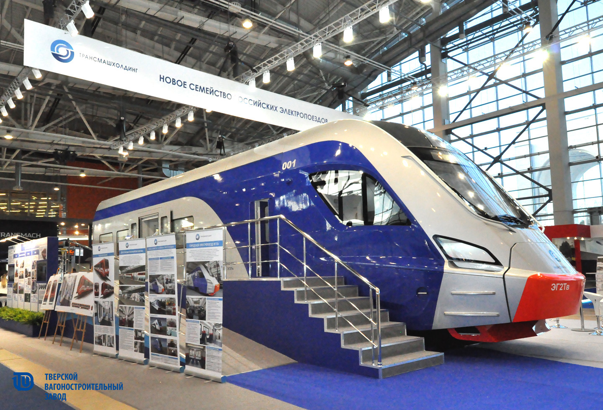
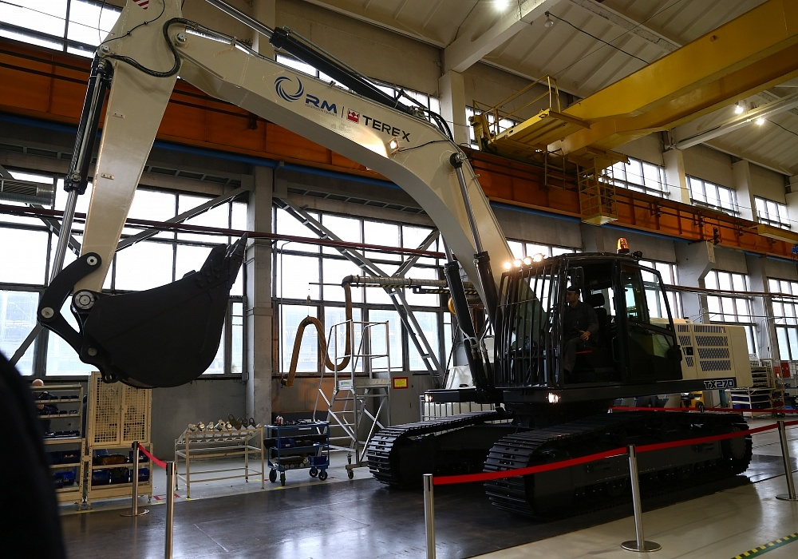
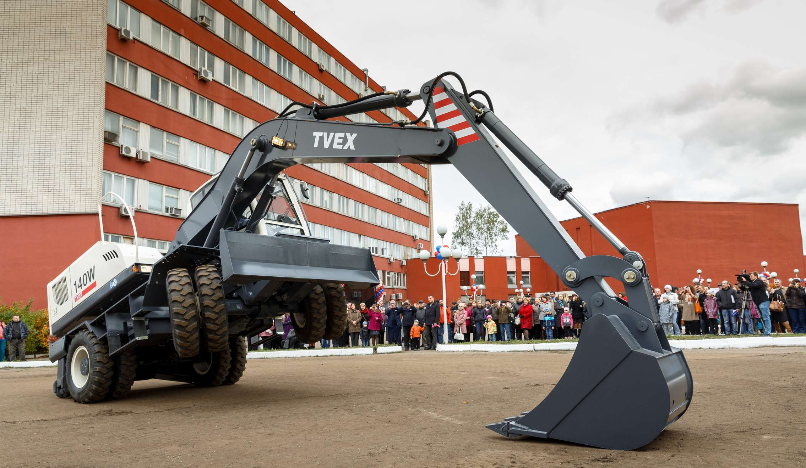
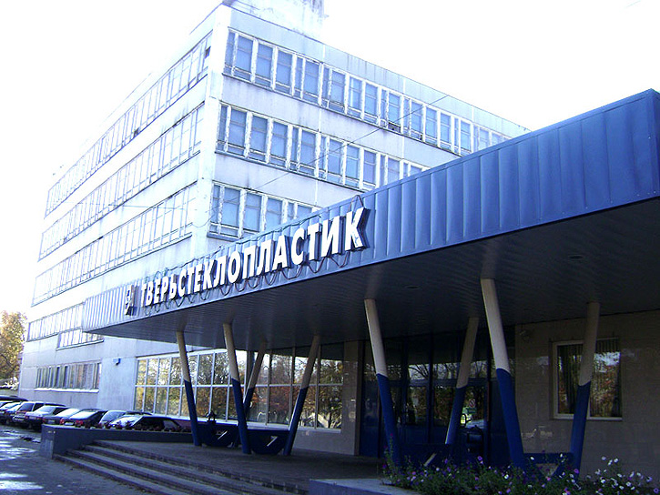
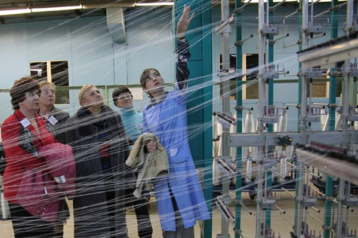
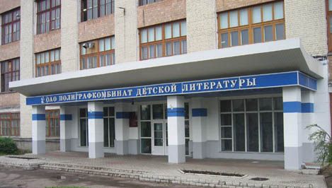
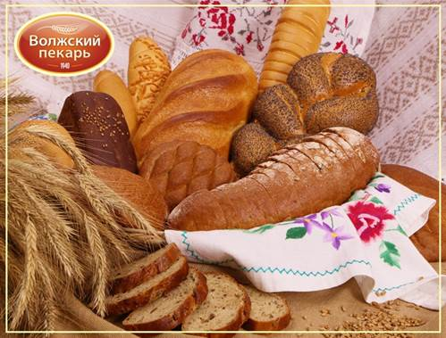
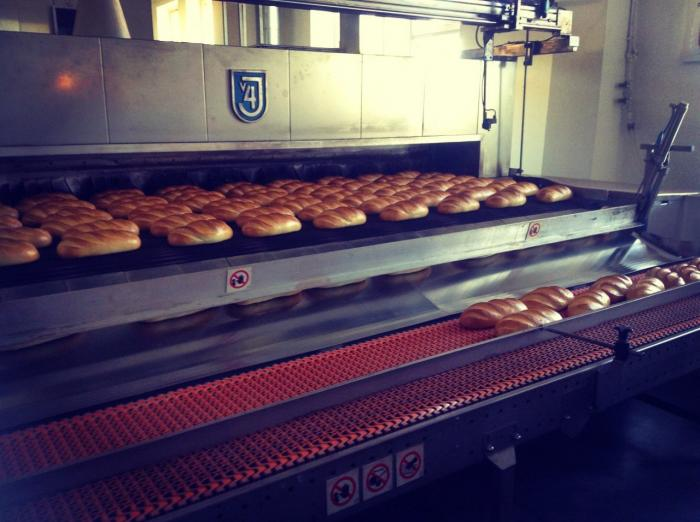
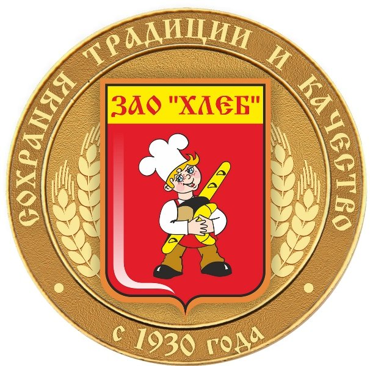

Тверь
Промышленность Твери
В городе развиты следующие отрасли промышленности: машиностроение, полиграфия, химическая, лёгкая и пищевая промышленность.
Основные крупные предприятия
- «Тверской вагоностроительный завод»

Завод основан в 1898 году французско-бельгийским акционерным обществом «Диль и Балакан», под названием Верхневолжский завод железнодорожных материалов. В 1915 году завод меняет название на Тверской Русско-Балтийский вагонный завод, а после национализации (в 1918 году) меняет название на Тверской вагоностроительный завод. В период с 1931 по 1990-е годы завод носил название Калининский вагоностроительный завод.
С первых лет XX века на заводе началась эпоха пассажирского вагоностроения. В Твери выпускаются четырёхосные спальные вагоны для акционерной компании «Международное общество спальных вагонов и скоростных европейских поездов», вагоны всех четырёх классов, двухэтажные вагоны, служебные вагоны с салонами и спальными купе, пассажирские вагоны для стран с жарким климатом В настоящее время выпускает пассажирские вагоны для поездов дальнего следования (до скоростей 160 км/ч и 200 км/ч), кузова вагонов метрополитена, тележки для пассажирских вагонов и вагонов метрополитена, колёсные пары, вагоны грузовые и специального назначения, вагоны повышенной комфортности, гидравлические гасители колебаний черт.
В 2007 году создан первый вагон, предназначенный для транспортировки по железной дороге отработанного ядерного топлива, выгружаемого из реакторов Белоярской АЭС (Свердловская область). Заказчик вагона — Федеральное агентство по атомной энергии (Росатом).
С 2015 года начат выпуск односекционных низкопольных трамваев модели 71-911 «City Star» (Городская звезда). Первые пять трамваев вышли на улицы Твери 27 июня 2015 года, когда город праздновал 880-летие со дня основания.
- Экскаваторный завод


Официальная дата создания завода — октябрь 1943 года. Но началась его история раньше: в 1938 году народный комиссариат по строительству принял решение о возведении в городе Калинине завода по ремонту экскаваторов. С началом Великой Отечественной войны строительство завода было прервано до января 1943 года.
В октябре 1943 года завод выдал первую продукцию и уже числился действующим предприятием.
Первой продукцией завода были товары народного потребления: грабли и ведра. Завод осуществлял монтажные работы, ремонт станков. Рабочий день в годы войны длился с 8 утра до 7 вечера. С 8 до 10 утра все заводские рабочие работали на выгрузке дров и торфа с барж, а затем выполняли свои основные обязанности.
В 1948 году КРМЗ «Экскаватор» переименован в Калининский экскаваторный завод (КЭЗ). В начале декабря 1949 года изготовлен опытный образец универсального экскаватора на пневмоколёсном ходу с канатной подвеской стрелы Э-255, серийный выпуск которых начался в октябре 1950 года. В 1953 году изготовлен опытный образец модернизированного экскаватора Э-253. В 1957 году завод полностью перешёл на выпуск экскаваторов новой модели Э-302 1961 год. Коллектив завода за успешную работу был занесён в Книгу Трудовой Славы области.
В 1962 году завод награждён Дипломом 1 степени ВДНХ СССР за создание и серийное производство экскаватора Э-304. В 1968 году разработаны рабочие чертежи и изготовлена первая промышленная партия экскаваторов в северном исполнении Э-302 БС. В 1969 году изготовлен опытный образец экскаватора-планировщика с телескопической стрелой с гидравлическим приводом на пневмоколёсном ходу.
Новый этап в развитии КЭЗа начался в 70-е годы. В 1974 году за создание и освоение серийного производства гидравлических экскаваторов ЭО-3322А завод награждён Дипломом ВДНХ второй степени. В 1978 году экскаватору ЭО-3322Б присвоен Государственный знак качества.
В 1981 году завод был занесён в «Летопись трудовой славы». В десятки стран мира экспортировалась техника с маркой «КЭЗ» — Калининский экскаваторный завод. В марте 1981 года был выпущен 50000-й экскаватор, а завод за оснащение народного хозяйства страны высокопроизводительной техникой награждён орденом Трудового Красного Знамени.
Середина девяностых годов для завода была крайне сложной, как и для промышленности всей страны. Успешно преодолеть это период во многом помогли экспортные контракты предприятия.
15 августа 2000 года организовано ОАО «Тверской экскаватор». В 2001 году завод вошёл в состав холдинга «РусПромАвто».
- Тверьстеклопластик


Завод «Тверьстеклопластик» – старейшее предприятие композитной отрасли: 2 декабря 1965 года на заводе была запущена первая стеклоплавильная электропечь. Изначально завод специализировался на производстве стеклотканей, продукции из стекловолокна и стеклопластика. На протяжении 50 лет «Тверьстеклопластик» удерживает статус одного из инновационных предприятий Тверской области.
В 2008 году предприятие вошло в группу компаний «РУСКОМПОЗИТ». С этого момента здесь начинается развитие производства цельнокомпозитных крупногабаритных изделий и конструкций на основе стеклопластика. Предприятие расширяет свои рынки сбыта, а среди партнеров появляются: «ГАЗПРОМ», «Транснефть», «Русснефть», «Роснефть», «Лукойл», «ТНК– ВР», «Ритек», «РЖД», ФДА «Росавтодор» и ГК «Автодор». С 2009 года на «Тверьстеклопластике» началась разработка инновационных цельнокомпозитных дорожных плит, заменяющих классические бетонные. В 2010 году завод отгрузил первые партии на объекты газотранспорта. Эти разработки завода легли в основу мобильных дорожных покрытий «МОБИСТЕК». За 20013-2014 годы на сооружение нитей газотрубопроводов на Севере России и строительство магистрального трубопровода «Южный поток» было поставлено более 18000 «МДП-МОБИСТЕК».
С 2011 года на заводе начали разработку технологии производства цельнокомпозитных пролётных строений мостов и пешеходных переходов. Уже в 2012 году первый пешеходный цельнокомпозитный мост появился в Башкортостане. Через год на федеральной трассе М-1 (Беларусь) - цельнокомпозитный двухпролётный остеклённый надземный пешеходный переход. Осенью 2015 года сданы ещё три перехода – в Липецкой области.
Сейчас территория завода представляет собой парк современного оборудования. Первые «ласточки» — 52 установки очистки сточных вод были в 2015 году установлены на объектах платной автомагистрали М-11 (Москва-Санкт-Петербург). В этом году совместно с компаниями «Роснано» завод начал производство наносодержащих водопропускных композитных труб и новой модификации «МДП-МОБИСТЕК-80» с нанодобавками в слое полиуретанового компаунда. «Тверьстеклопластик» активно продолжает развивать новые направления. Планируется выход на зарубежные рынки.
- Полиграфкомбинат

В 1948 году было издано распоряжение Совета министров СССР о проектировании типографии красочной печати в Калинине. Строительство комбината началось в 1951 году, и уже в 1954 увидела свет первая печатная продукция. Это были простенькие этикетки "Сгущеное молоко" и плакаты "Гусиная ферма". С каждым годом Полиграф рос, формировался и взрослел, претерпевая сложные процессы реконструкций и технических перевооружений, и ориентируясь на выпуск более сложной, многокрасочной печатной продукции.
В 1970 годы предприятие регулярно занимало первые места в социалистических соревнованиях и награждалось переходящим Красным знаменем Совета министров СССР и Красным знаменем Комитета по печати СССР. В 1971 году коллектив комбината был награжден орденом Трудового Красного Знамени. В 1994 году ТПК одним из первых предприятий стал открытым акционерным обществом. Развитие на комбинате идет постоянно. Последнее техническое перевооружение началось на предприятии в 1999 году - на смену старому оборудованию приходит новое.
Сегодня Тверской полиграфический комбинат является крупным полиграфическим предприятием, известным по всей России. На книгах, напечатанных здесь, выросло не одно поколение. Сегодня комбинат - это стабильно развивающееся районообразующее предприятие.
- ОАО Полиграфкомбинат детской литературы

За свою историю с 1965 года Тверской полиграфический комбинат детской литературы выпустил более 5,7 миллиарда экземпляров книг и брошюр. Помимо учебной литературы нее комбинат производит детскую, художественную и научно-популярную литературу. Многокрасочную и черно-белую. А также различную продукцию на мелованных бумагах. Это кулинарные книги, альбомы по искусству, путеводители и пр. Спектр оборудования, которым оснащено предприятие, позволяет выпустить книгу любой сложности в соответствии с потребностями современного рынка.
Тверской полиграфический комбинат детской литературы входит в тройку лидеров по выпуску книг в России. Предприятие работает более чем со 165 издательствами страны. Порядка 15 из них – издательства, выпускающие учебную литературу. В числе партнеров Тверского полиграфкомбината детской литературы такие крупные издательства, как «Просвещение», «Дрофа», «АСТ», «Азбука-Аттикус», «Канц-Эксмо», «Самовар», «Фламинго».
Полиграфкомбинат производит полный цикл работ по изготовлению книг: от получения информации от издательства на электронных носителях до производства, упаковки и отгрузки готовой продукции клиенту. Также предприятие имеет свой склад бумаги. В 2010 году был создан издательско-образовательный холдинг, в который входят такие издательства, как «Просвещение», «Высшая школа» и пять полиграфических предприятий, среди которых и Тверской полиграфический комбинат детской литературы. Сегодня в холдинге созданы единые коммерческая, инженерная службы, служба закупок, что значительно повышает управляемость как внутри холдинга, так и внутри каждого предприятия.
Тверской полиграфкомбинат детской литературы продолжает динамично развиваться.
- ЗАО «Волжский пекарь»


